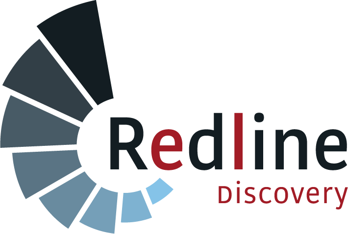

{{ art.deck }}
{{ art.bulletin }}
{{ b.x }}
{{ b.x }}
{{ b.mark }}

Let our programmers, data experts, solution architects & investigation practitioners work together to support your complex investigation needs
Choose SPOTLIGHT, our digital investigation solution to increase clarity and efficiency, enable collaboration and unlock the truth
Hire our experts to train your team or support your criminal or civil investigations directly
The platform is the same. The evidence rules, procurement path and reporting are not. Choose your route.
Cross-border litigation and investigations across fragmented tools, defensible evidence, multi-jurisdiction teams, and the cost of manual evidence handling.
International accountability investigations, chain-of-custody suitable for tribunals, responsible AI, and training built into the engagement.
SPOTLIGHT tackles ongoing challenges in investigations, enhancing case management efficiency through innovation. Speed up justice & accountability with a unified investigation environment.
Our advanced investigation management software simplifies the investigative process for international communities, civil society, law enforcement, and private investigators. It provides tools for organizing and tracking cases, evidence, and documents securely, while offering analytics and reporting features to identify patterns and support data-driven decisions. The platform enables real-time collaboration, integrates with existing databases, and automates tasks for improved efficiency.
{{ p.body }}
{{ p.body }}
Redline Discovery {RLD} is a software & investigations company founded by experts to tackle modern investigative challenges. We created SPOTLIGHT to enhance investigation processes and align AI innovations with global justice practices.
Collaborating with specialists in investigations & law, we continuously refine our solutions to address persistent issues in international accountability investigations. Our focus is on developing tailored solutions that meet investigative needs, rather than generic marketing approaches.
We prioritize working with clients to innovate & enhance our offerings, ensuring the best integration of field collection, case management, and analytical practices. Our goal is to solve real-world challenges in real-time using cutting-edge technologies.
A complete range of investigation management, analysis, and legal solutions for your operational, strategic, and administrative needs
A single environment for cross-border litigation and investigations: e-discovery, financial records, OSINT and digital evidence, with a chain-of-custody suitable for international tribunals and court proceedings.
Book a demoManaging cross-border litigation and investigations across fragmented tools - e-discovery, financial records, OSINT, digital evidence - without a unified system.
Ensuring evidence and analysis remain defensible and admissible - chain-of-custody, explainability of AI-assisted findings.
Coordinating multi-jurisdiction teams and external investigators or experts securely.
Reducing time and cost on manual evidence handling and transcription in complex matters.
Redline is a specialized, ethical and independent platform built for legally defensible investigations - not a general-purpose analytical tool. Case management, financial analytics, digital evidence, OSINT and audiovisual material live in one environment.
Chain-of-custody suitable for international tribunals and court proceedings.
Forensic AI that surfaces hidden patterns while working transparently.
Training and investigation support built in, not sold as an afterthought.
Our engagements are frequently covered by confidentiality obligations, privilege and NDAs. Cleared, anonymized case studies are published as they become available - for example, a European law firm handling a cross-border asset-tracing matter.
Read the case studiesOne environment for international accountability investigations - case management, OSINT, digital evidence, audiovisual material and financial analytics, with a chain-of-custody suitable for international tribunals and court proceedings.
Evidence collected and handled so that it holds up before international tribunals and national courts.
Ethical and forensic AI that works transparently, so AI-assisted findings can be explained and defended.
Patterns across corruption, propaganda, cybercrime and cross-border financial flows, surfaced from data of all sizes.
Training and investigation support included - we can train your team or work alongside it directly.
A field-deployable extension of the platform for frontline teams - NGO field staff, humanitarian and human-rights investigators - working offline in difficult conditions.
We work from HSD Campus and the Hague Humanity Hub, the security and justice tech cluster, alongside Lex Collective, Integrity Initiatives International, Heartland Initiative and NBCC.
Talk to our teamA unified investigation platform: case management, analytics, OSINT, digital evidence and financial data in one environment.
Organize and track cases, tasks, lines of inquiry, hypotheses, evidence and documents securely - from one case dashboard.
Analyse cross-border financial flows alongside the rest of the case record.
Open-source material, digital evidence and audiovisual files in one workspace.
Suitable for international tribunals and court proceedings.
Surfaces hidden patterns across corruption, propaganda, cybercrime and financial flows - working transparently.
Built into the product - software plus services, not software alone.
Every case follows the same arc: set it up, collect material, analyse it, and present what you found. Each step links to the one before it.
Terms of reference: aims, phases, lines of inquiry and hypotheses. Register the alleged violations you set out to prove, each with statute, severity and status.
Open, closed and exhibit material. Create records by hand, import from file or mass-upload documents, with sensitivity, sources and collectors recorded at intake.
Select a passage and turn it into a Fact, an Entity or a Link without leaving the page. Combine facts into conclusions. A full audit trail records who did what and when.
Network charts drawn from your entities and links. Reports written inside the case, next to the evidence, and exported to a formal case record.
A passage in a document becomes a fact. Facts combine into a conclusion. Entities and their links form a chart. Violations gather it all into a provable allegation, ready to be written up as a report. A reviewer can follow any conclusion back to the exact line of the document that supports it.
Organisation SSO with Google Workspace or Microsoft Entra, email and password, QR code or authentication code.
Quick, from a template, or fully custom with groups, phases and objectives. Save as draft and publish later.
Workflows, states and certificate requirements automate repetitive steps. Portals and templates for sharing and standardisation.
A built-in sandbox case with fictional data, so new users can practise the full workflow end to end.
A field-deployable extension of the platform for capturing evidence in the moment - offline, in difficult field conditions.
{{ art.deck }}
Our monthly bulletin covers the evolution of OSINT, the dark web, forensic AI and anti-corruption work - written for practitioners, not for search engines.
Long-form analysis, published every month.
Cross-border e-discovery, chain-of-custody and admissibility, multi-jurisdiction case coordination.
Whitepapers, reports and checklists for teams evaluating an investigation platform.
Most of our engagements are covered by confidentiality obligations, privilege and NDAs. The studies below are cleared and anonymized: the facts are real, the identifying details are not.
{{ c.summary }}
{{ c.challenge }}
{{ c.approach }}
{{ c.outcome }}
We can walk you through a matter close to yours under NDA.
Ask about a comparable matterRedline Discovery {RLD} is a software & investigations company founded by experts to tackle modern investigative challenges. We created SPOTLIGHT to enhance investigation processes and align AI innovations with global justice practices.
Collaborating with specialists in investigations & law, we continuously refine our solutions to address persistent issues in international accountability investigations. Our focus is on developing tailored solutions that meet investigative needs, rather than generic marketing approaches.
We prioritize working with clients to innovate & enhance our offerings, ensuring the best integration of field collection, case management, and analytical practices. Our goal is to solve real-world challenges in real-time using cutting-edge technologies.
We work from HSD Campus and the Hague Humanity Hub - the security and justice tech cluster, in the city of the international tribunals.
To strengthen justice systems through secure, responsible and future-proof technology.
Lex Collective · Integrity Initiatives International · Heartland Initiative · HSD Campus · NBCC
Winner of the NBCC Tech AI Award 2025, awarded by the Netherlands British Chamber of Commerce.